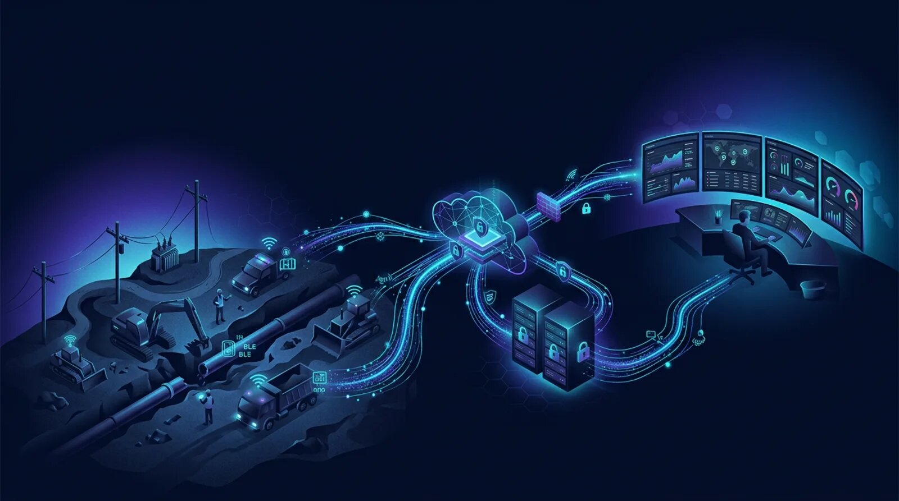

Connect RFID, BLE, GPS, and LoRaWAN technologies with enterprise software to synchronize crews, assets, and utility construction operations in real time.

Utility construction projects routinely span hundreds of miles across transmission corridors, underground pipeline routes, electrical substations, renewable energy interconnections, and municipal utility expansion programs. Construction crews operate simultaneously from temporary staging yards, remote right-of-way locations, urban streets, and active utility easements while project managers coordinate activities from regional offices.
Keeping field activities synchronized with engineering teams, project management, inventory administration, safety personnel, and compliance documentation requires reliable communication between connected field devices and enterprise software.
UtilCon AI provides AI and IoT integration solutions that connect RFID readers, BLE devices, GPS trackers, and long-range wireless communication equipment with office-based software used throughout utility construction operations. Rather than functioning as isolated hardware deployments, connected identification technologies become part of a unified operational workflow supporting workforce identification, access management, material accountability, fleet visibility, inventory administration, work package documentation, and installation traceability.
Artificial Intelligence of Things, commonly referred to as AIoT or AI and IoT, combines artificial intelligence with connected industrial devices, machine learning, Edge AI, computer vision where applicable, and enterprise software. Within utility construction, AIoT transforms identification records collected from RFID, BLE, GPS, and communication devices into operational information that supports project execution while maintaining reliable workforce and asset visibility.
This page focuses on how field-generated identification records move securely from construction activities into enterprise software while supporting remote utility corridors, distributed contractor operations, and multi-phase infrastructure projects.
Utility construction organizations rely on integrated field and office systems to maintain continuity throughout every stage of infrastructure development. Reliable information exchange reduces administrative delays while improving coordination between construction personnel, engineering departments, logistics teams, and project management offices.
Typical applications include:
Although every project differs, the integration objective remains consistent: securely transfer validated identification data from the field into enterprise software that supports project execution and long-term infrastructure documentation.
Construction environments continuously change as crews advance along utility corridors, relocate staging areas, complete trenching operations, install utility poles, commission substations, and restore work areas. Integration software must accommodate these dynamic conditions without interrupting ongoing operations.
UtilCon AI integration solutions support:
Reliable integration allows field-generated identification events to become immediately available to authorized engineering, logistics, safety, compliance, and project management personnel.
Different utility construction organizations require different deployment approaches depending on project scale, regulatory requirements, network availability, cybersecurity policies, and existing information technology infrastructure.
UtilCon AI supports deployment models that accommodate both centralized enterprise environments and geographically distributed construction operations.
Cloud deployment is well suited for organizations managing multiple construction projects across regional or national service territories.
Construction personnel working along transmission lines, underground utility corridors, or municipal infrastructure projects can securely transfer validated identification records from connected field devices into centralized enterprise software through available communication networks.
Cloud deployments commonly support:
Construction executives, engineering teams, safety departments, logistics coordinators, and project managers can access current project information from authorized office locations while maintaining standardized operational procedures across multiple utility construction programs.
Certain utility construction organizations prefer server-based deployments because of organizational security requirements, internal information technology policies, contractual obligations, or operational preferences.
Server deployments provide organizations with direct control over software, data storage, user administration, and enterprise integration while maintaining compatibility with existing engineering and construction management systems.
Server deployments are frequently selected for:
This deployment model enables organizations to integrate identification records with internal enterprise systems while maintaining established cybersecurity and governance policies.
Reliable system connectivity is essential for utility construction organizations managing multiple crews, contractors, vehicles, materials, and work packages across geographically distributed project sites. Utility construction activities frequently occur along transmission corridors, pipeline rights-of-way, underground utility routes, and remote substations where communication conditions vary throughout the project lifecycle.
UtilCon AI provides integration workflows that securely connect identification events generated by RFID readers, BLE devices, GPS trackers, and LoRaWAN communication equipment with enterprise software used by engineering, project management, logistics, inventory, safety, and compliance teams.
Rather than transferring raw device information directly into business applications, validated identification records move through controlled integration workflows that verify device identity, user authorization, timestamp accuracy, and communication integrity before synchronizing with enterprise systems.
Typical integration destinations include:
This structured data flow helps maintain consistent project documentation while supporting secure information exchange across multiple departments.
Construction supervisors require current information from active work sites without waiting for manual reports at the end of each shift. Field-to-office synchronization enables project teams to access validated workforce, equipment, and material records shortly after identification events occur.
Examples of synchronized operational records include:
This continuous synchronization reduces duplicate data entry and helps engineering teams make informed operational decisions using current project information.
A typical AI and IoT integration workflow follows a structured sequence that preserves data integrity while supporting enterprise reporting.
The workflow generally includes:
This controlled workflow supports consistent information management throughout the construction lifecycle.
Utility construction frequently occurs in locations where continuous network connectivity cannot be guaranteed. Remote transmission corridors, mountainous terrain, rural pipeline routes, and temporary construction compounds may experience intermittent communication coverage.
Edge site processing enables critical operational activities to continue even when communication with central office systems is temporarily unavailable.
Edge processing can support:
When communication becomes available, validated records are securely synchronized with enterprise systems without requiring duplicate field activities.
This approach helps maintain operational continuity while supporting projects in geographically challenging construction environments.
Utility construction organizations typically rely on multiple business applications throughout planning, construction, commissioning, and project closeout. AI and IoT integration allows identification records collected in the field to become part of broader operational workflows.
UtilCon AI supports integration with software responsible for:
By integrating with existing enterprise software rather than replacing established systems, organizations can extend the value of current technology investments while improving operational visibility.
Utility construction projects require detailed documentation supporting regulatory compliance, safety procedures, customer acceptance, and infrastructure commissioning.
Validated identification records generated by connected devices can contribute to digital documentation supporting:
These records help simplify administrative processes while improving consistency throughout construction reporting.
Construction organizations manage sensitive operational information that must be protected throughout collection, transmission, storage, and reporting.
UtilCon AI incorporates secure communication practices designed to support enterprise cybersecurity policies while maintaining reliable field operations.
Security considerations include:
These practices help organizations maintain confidence in operational information exchanged between field locations and office systems.
Utility construction organizations frequently manage multiple projects simultaneously across transmission line corridors, underground pipeline installations, electrical substations, renewable energy interconnections, and municipal infrastructure programs. Project teams may consist of internal employees, subcontractors, engineering consultants, inspectors, logistics personnel, and equipment operators working from numerous field locations.
UtilCon AI integration solutions help standardize operational workflows across geographically distributed construction programs by ensuring that validated identification records are securely synchronized between field activities and enterprise software.
Typical enterprise integration capabilities support:
A standardized integration approach reduces administrative complexity while providing consistent information across all active utility construction projects.
AI and IoT integration supports identification and location workflows throughout the complete utility construction lifecycle. Whether projects involve overhead transmission infrastructure or underground utility corridors, reliable information exchange improves operational coordination and documentation quality.
Typical applications include:
Field devices identify utility poles, conductor reels, construction crews, bucket trucks, and mobile equipment. Validated records synchronize with project management software, allowing engineering teams and supervisors to monitor installation activities, workforce allocation, and material usage throughout the transmission corridor.
RFID identification, GPS tracking, and long-range communication technologies support pipe identification, contractor management, excavation activities, work package documentation, and inventory administration across extended pipeline routes.
Connected identification technologies help coordinate deliveries of transformers, switchgear assemblies, structural steel, cable reels, and installation equipment while supporting secure workforce access and digital construction documentation.
Construction projects involving water, wastewater, electrical distribution, fiber infrastructure, and utility relocation benefit from centralized integration between field devices and municipal engineering software, enabling accurate documentation of completed infrastructure.
Modern utility construction depends on more than connected devices. The greatest operational value is achieved when identification records become part of broader construction management workflows.
An integrated AI and IoT solution provides organizations with:
These capabilities help engineering, logistics, safety, and project management teams work from the same verified operational information throughout the construction lifecycle.
UtilCon AI was developed within Aperture Venture Studio, with support from GAO, drawing upon more than twenty years of industrial IoT experience. This experience has been shaped through thousands of successful IoT projects and customer engagements supporting utility construction, infrastructure development, industrial operations, and enterprise identification solutions.
Research and development efforts are supported by rigorous quality assurance practices, remote and onsite technical assistance, and multidisciplinary teams led by Ph.D. professionals from leading universities. Related organizations have supported Fortune 500 companies, research institutions, universities, and government agencies across the United States and Canada. These experiences contribute to practical AI and IoT integration solutions designed for demanding utility construction environments.
UtilCon AI integration solutions connect field operations with enterprise software through secure, standardized workflows that improve identification, location, and documentation processes across utility construction projects.
Common applications include:
Reliable integration helps transform field-generated identification records into valuable operational information that supports engineering, logistics, safety, compliance, and project management throughout the entire construction lifecycle.
Every utility construction organization operates within a unique combination of project locations, workforce structures, communication infrastructure, regulatory requirements, and enterprise software environments.
UtilCon AI works with utility contractors, engineering firms, public utilities, municipal infrastructure organizations, and energy developers to design AI and IoT integration solutions that connect RFID, BLE, GPS, LoRaWAN, and edge computing technologies with existing enterprise systems.
Whether your projects involve transmission lines, underground pipelines, substations, renewable energy infrastructure, or municipal utility expansion, our specialists can recommend deployment models and integration strategies that align with your operational objectives while preserving existing software investments.
Contact UtilCon AI →